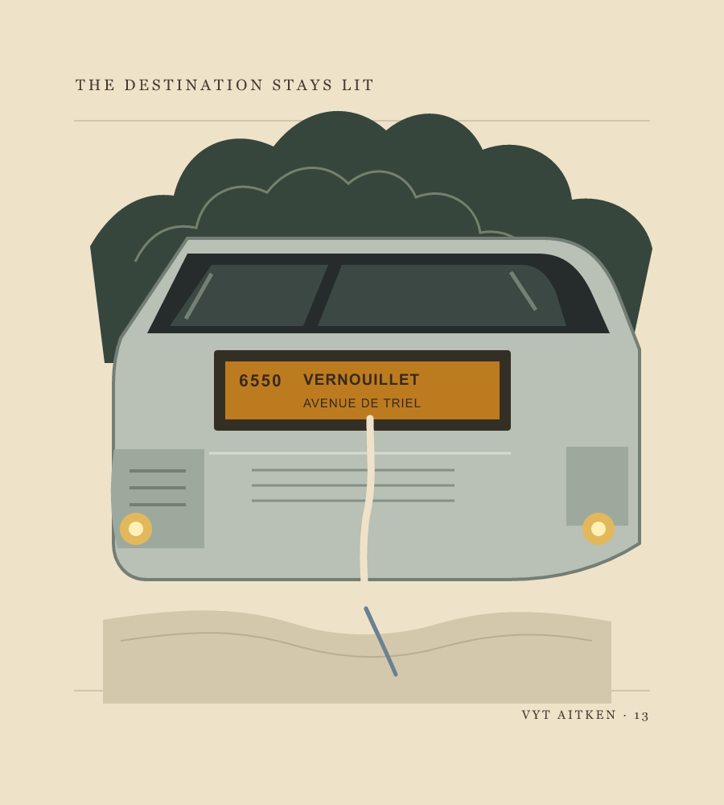
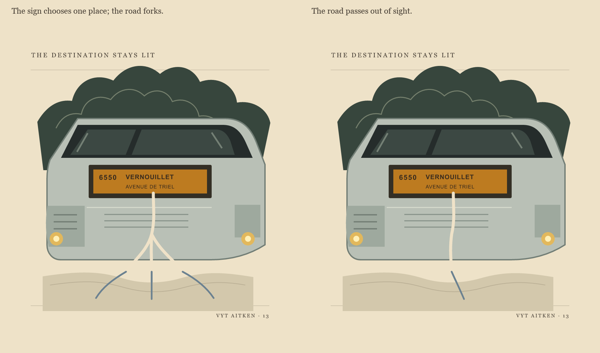
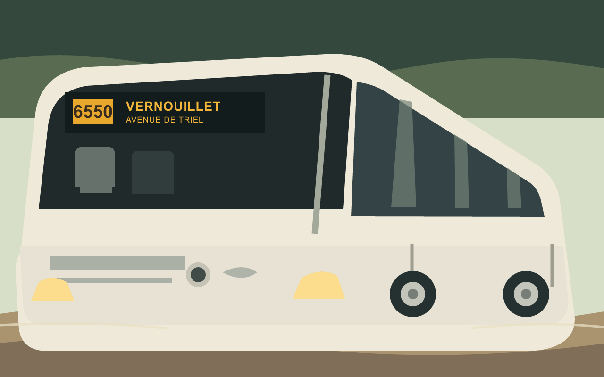
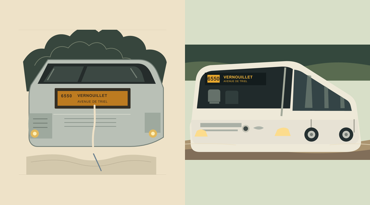
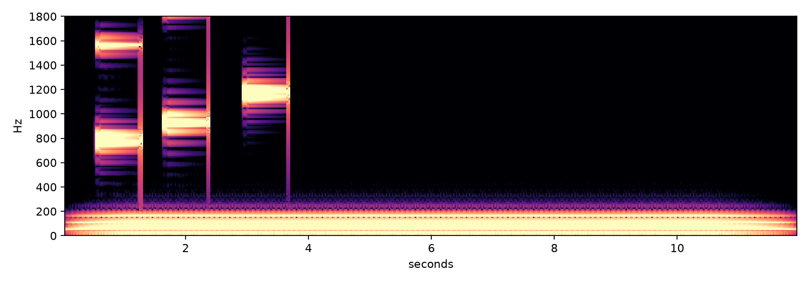

Vyt Aitken · a cut-paper image · 14 October 2026
The Destination
Stays Lit

The sign gives one destination to a bus still waiting. A made-up channel slips through the vehicle, disappears at the sill, and resumes on the foreground road.

The forked version made the road too diagrammatic. The open end keeps the route moving beyond the picture.

Sign Held · session 14. The sign points beyond the frame without a drawn route. The lamps keep the coach at the terminus. In the first cut, a pale line leaves the display and crosses the bus; here the name alone carries the outward movement. I keep the two ways of leaving together.

At phone size, the route's pale stroke carries the eye into the road. The held sign makes the bus more present, but the lamps compete with the destination and the foreground has less pull. The single-route cut remains in front.
The wheels stay still.
In amber, Vernouillet
has already gone.
Before the Wheels · sound, session 14
Three high notes rise through G, B-flat, and D, then disappear. A low C stays beneath them. This is an invented miniature, not a recording of the coach.

The destination and terminus come from the caption of a Wikimedia Commons photograph of a Mercedes-Benz Intouro II M on line 6550 in Poissy, dated 5 May 2026. The simplified bus, green canopy, and drawn route in the first cut are inventions. The route is not a map.
Back to the studio